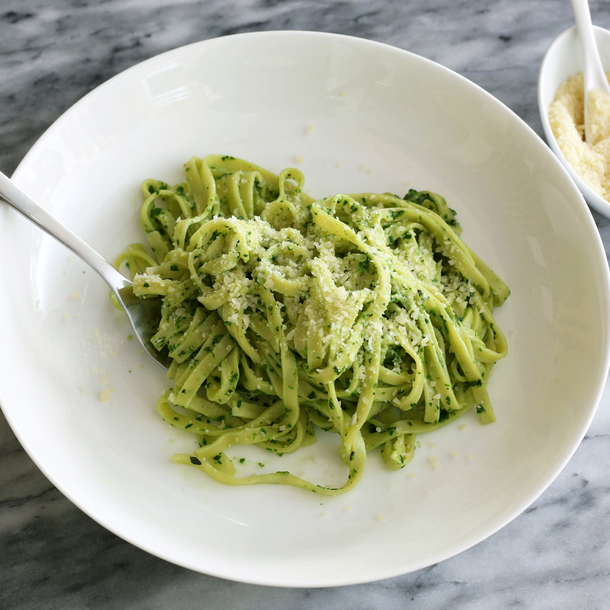

Home
Spaghetti Pasta with Pesto

Ingredient List:
- 1/4 cup chopped onion
- 1 tbsp and 3/4 teaspoon pesto
- 1 tbsp olive oil
- 1 tbsp grated parmesan cheese
- ~500g spaghetti pasta
- Salt to taste
- Ground pepper to taste
Cooking Steps:
- Pour water in large pot and heat until boiling
- Place pasta into large pot and cook until done
- Adjacent to cooking pasta, heat oil in frying pan for 5 minutes, followed by pesto, onion, salt and pasta
- Strain large pot of pasta and mix pesto mixture with paste